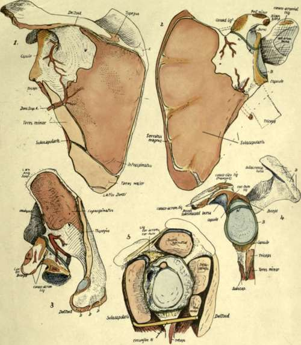

Ventral Surface
Description
This section is from the book "The Anatomy Of The Human Skeleton", by J. Ernest Frazer. Also available from Amazon: The anatomy of the human skeleton.
Ventral Surface
Observe that the narrow rim on this surface close to the vertebral border, for the Serratus magnus, widens at the upper and lower angles-especially at the lower angle-■ and thus the origin of Subscapularis cannot reach these or the intervening border. These widenings correspond with the arrangement of the digitations of the muscle : the upper two are inserted into the upper angle, the next two into the border, and the remaining ones converge on the lower angle. The arrangement indicates that the main action of the muscle is on the lower angle, and such action is illustrated in the movement of raising the hand over the head. The arm is abducted by the fibres of the Deltoid acting from the outer margins of the acromion, and the effect of the contraction of this muscle is to approximate its points of attachment either by raising the arm or by rotating the scapula inwards on its upper attachments (Fig. 60). Naturally the latter movement would occur rather than the lifting of the heavy limb, if it were not for the Serratus magnus, which, pulling forward on the angle of the scapula, would tend to rotate that bone outwards and thus to neutralise the action of the Deltoid on the bone Thus the Serratus can be said to h\ the scapula while the Deltoid raises the arm to a right angle : after this, since the humerus cannot be further abducted from the scapula owing to the conformation of the tissues, the Deltoid fixes the humerus on the scapula while the Serratus magnus, by its active contractions, rotates the scapula outwards and thus raises the arm higher : the Trapezius is associated with Serratus magnus in these actions, whereas the Rhomboids have the opposite effect when they contract.
Such action of the Serratus magnus on the scapula is best served by concentrating its force on the lower angle, as far as possible from the axis of rotation, and this calls for a modification in the structure of the scapula. It is evident that, with a weight tending to turn the glenoid cavity down on the one hand and a strong muscle pulling the angle forward and thus turning the glenoid up on the other hand, the bone requires strengthening in the line between the angle and the glenoid, for here is where it would "buckle" at once if it lacked resisting power. Consequently we find a very thick bar of bone in this line of greatest strain, more apparent on the ventral side owing to its concavity, but also visible dorsally where it is covered by the Teres muscles.
This thick ventral bar, then, is a "primary " ridge, concerned in the mechanical^ building of the bone, and has nothing to do with the axillary border, which is a secondary ridge carried out on its outer aspect. The covering of Subscapularis is really responsible for the axillary border as a ridge, and so we find that the origin of this muscle extends out to the axillary border, and follows this even when, as frequently occurs, it turns on to the dorsal surface for a little distance between the Teres major and minor (Fig. 57). The line of origin of Subscapularis extends along the border as far up as the origin of the Triceps. Its inner limit is made by the area for Serratus magnus, as already mentioned, and its margin reaches the top border of the bone in front of the upper and inner angle, and runs along this border as far as the suprascapular notch. The outer limit of its origin between this point and the axillary border is somewhat variable : the muscle marking given in the figure may be taken as an average type, and the concave irregular line passes inside the foramina found in the ventral fossa, which are for small vessels belonging to the suprascapular system. Observe now that the area of origin is marked by a variable number of secondary ridges, all converging in the direction of the fibres of the muscle : these are evidently for intramuscular tendinous slips, which increase the area of origin of the muscle so that it forms an exceedingly thick mass. If the bones are articulated and a line drawn to represent the lower border of the muscle, from the lowest point of its origin to the lowest point of insertion, it is evident that its inferior border comes down a considerable distance below the axillary margin of the scapula, as shown in the figures.
The outer third of the ventral surface is covered by the Subscapularis, which plays over it without arising from it. As it gets near the neck the subscapular bursa separates it from the bone, and the coracoid process arches forward over the top of its tendon : the subscapular bursa is frequently prolonged upwards over the tendon as a " sub-coracoid bursa " between it and the concave lower aspect of the coracoid process under which it plays. The subscapular bursa is also between the tendon and the inner part of the capsule, and opens into the joint between the upper and middle gleno-humeral ligaments, by a large aperture on and in which the upper part of the tendon lies as it passes out towards the humerus.
Dorsal Surface (see Fig. 57).
Notice that the floors of the supra- and infra- spinous fossae are in different planes, depending on the relations of their contained muscles to the rounded end of the humerus. It is this difference in planes that really makes the subscapular hollow on the bone, for this hollow corresponds with the base of the spine, where the two planes meet at an angle (130 degrees) with each other as well as with the spine. It can be seen that the bone below the level of the spine is slightly concave, that is, it is shghtly convex on the ventral side, and in the early embryonic condition the scapula is decidedly convex on its ventral aspect, and does not possess a supraspinous fossa : the Supraspinatus is at first a very small rudiment attached only to the upper and outer border of the bone, and as it extends it forms a fossa, and this in its turn makes an angle with the lower plate which is the subscapular hollow (see Fig. 58).
The two muscles that occupy the fossae extend their origin to the vertebral border : here there is a definite rim which marks the attachment of their covering aponeuroses. Supraspinatus arises along the upper margin and in the fossa as far as the level of the notch, where the suprascapular vessels and nerve pass between it and the bone, turning slightly forward to reach the great scapular notch. Both muscles get an origin from the spine of variable length, but usually extending outwards as a narrow area considerably further than their origins from the floors of the fossae. The presence of intramuscular tendons in the Infraspinatus is shown by the ridges on the bony surface. The aponeurosis covering Infraspinatus is strong, giving origin to muscular fibres and making by its outer attachment the line separating the infraspinous and teres surfaces : therefore the origin of Infraspinatus reaches this hne, and extends up along it for a considerable distance. The two Teres muscles lie against the aponeurosis on this line, and the Teres major in particular is very prone to extend its area of origin on to the aponeurosis, thus lying partly superficial to Infraspinatus. Origin of Teres minor extends to the neck of the bone, its area being interrupted by the passage of the dorsalis scapulae vessels : these lie in a definite groove on the bone, and are covered by a fibrous arch from which muscle fibres arise. At the inner end of the groove there is a break in the ridge for the infraspinous aponeurosis, showing where the vessels pierce the aponeurosis to pass deep to the Infraspinatus, and this point can be used as the upper limit of origin of the outer border of Infraspinatus.
Fig. 57.-Left scapula : 1, from behind ; 2, from the front; 3, from above ; 4, glenoid region ; 5, scheme to show relations of capsule of shoulder joint. A (dark green), line of junction of coracoid and scapular parts, fi (light green), glenoid ligament round cavity. C, fibrous band under Subscapularis, across branch of subscapular artery into subscapular fossa. D,D, ridges marking tendons of origin of Deltoid (see Fig. 59). E, occasional bursa under Trapezius.
By articulating the bones it can be seen that the lower border of Teres minor comes down below the level of the axillary border of the bone, as in the case of Subscapularis, and almost to the same extent. In other words, the two muscles are only partly separated by the bone, and below this, from within outwards, by dorsalis scapulae artery, long head of Triceps, and finally by the upper end of the humerus.
Teres major is a part of the Subscapular mass which has extended round the border of the bone to reach its dorsal surface, but, being part of that mass, it must lie in the same general plane-that is, it lies along the lower border of Subscapularis and passes with it in front of Triceps, instead of behind the plane of this muscle which would be the level of muscles belonging properly to the dorsal musculature of the scapula. It is not separated from its main mass as a result of its dorsal origin or the passage of nerves and vessels between them, but owing to its difference in function : this is the great cause of separation between muscles belonging to the same mass fundamentally.
The spino-glenoid ligament, which bridges over the great scapular notch, is simply a fascial band made by the fusion of the fascial sheaths of Supraspinatus and Infraspinatus : these coverings are at first separated by the spine, but they come together at the free edge of this process, and are attached to this edge and to the capsule, etc., further out. The fused sheaths thus form a " ligament " with these connections, and this must of course be over the vessels and nerve here, because they are deep to the plane of the muscles and fasciae concerned.
Continue to:
- prev: Scapula
- Table of Contents
- next: Spine And Acromion